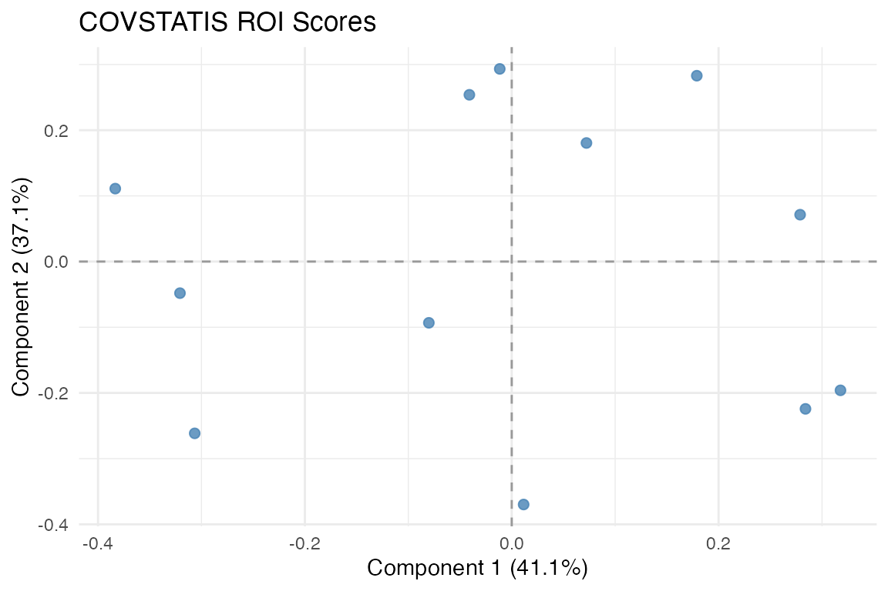
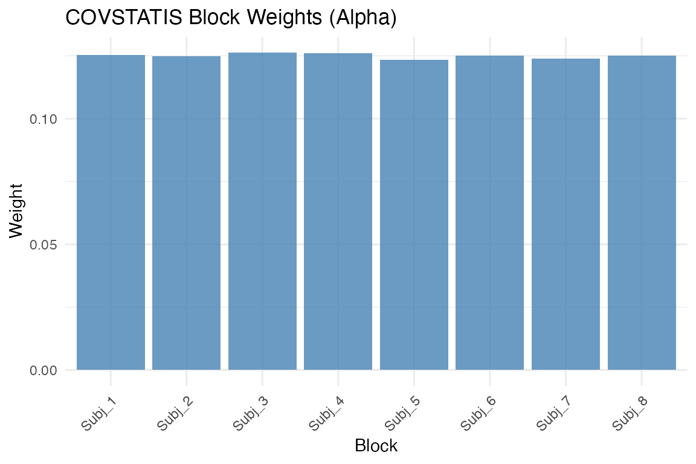
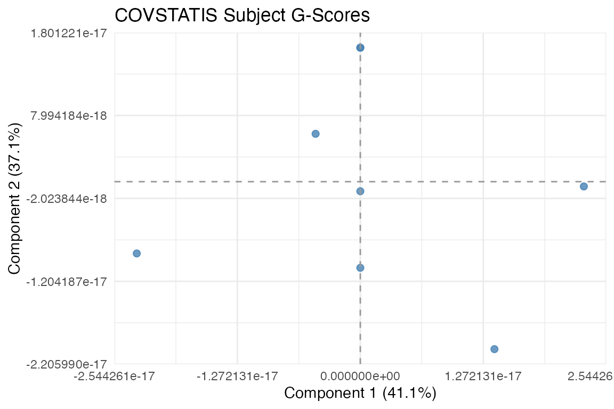
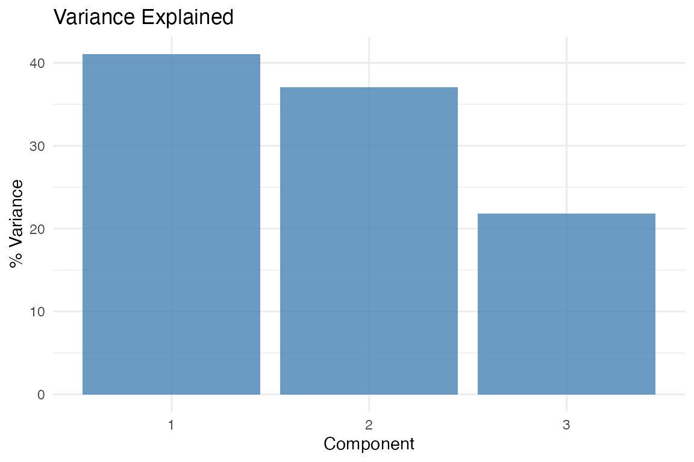
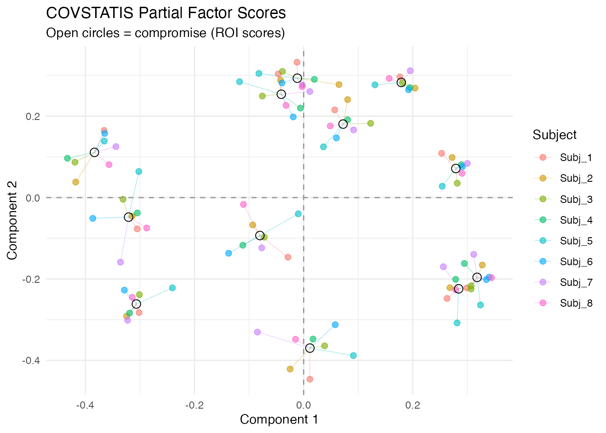
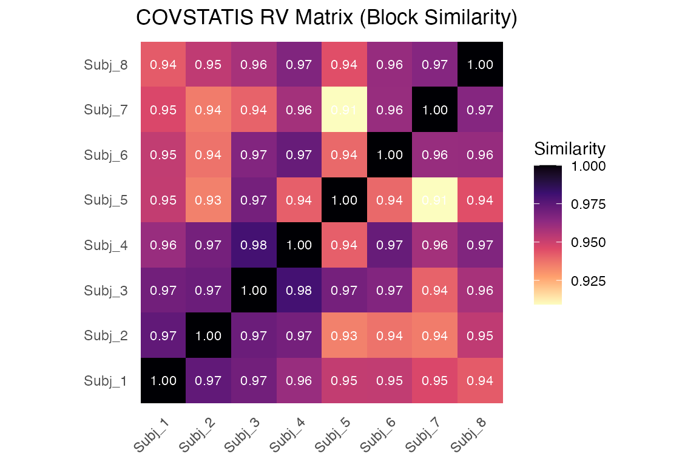

COVSTATIS Analysis
covstatis.RmdWhy COVSTATIS?
You have correlation or covariance matrices from multiple subjects — say, resting-state functional connectivity measured in 10 people — and you want to find the shared structure. Which brain regions co-activate consistently across subjects? Which subjects are outliers? COVSTATIS answers these questions by computing a compromise matrix that optimally represents the set, then projecting both variables (ROIs) and subjects into a common low-dimensional space.
COVSTATIS is the covariance-matrix variant of STATIS, a “French school” method for analyzing collections of data tables.
Quick start
library(muscal)
library(multivarious)
library(ggplot2)We simulate 8 subjects, each with a 12 x 12 correlation matrix. All subjects share the same underlying factor structure, but with individual noise.
# 8 subjects, each with a 12 x 12 correlation matrix
length(cor_list)
#> [1] 8
dim(cor_list[[1]])
#> [1] 12 12Fit COVSTATIS and extract the compromise:
fit <- covstatis(cor_list, ncomp = 3)
ROI scores in the compromise space. Variables that co-vary consistently across subjects cluster together.
The ROI score plot shows 12 variables positioned according to their role in the compromise. Variables close together have similar correlation patterns across subjects.
How COVSTATIS works
The algorithm has four steps:
Preprocess each matrix — optionally double-center (Gower transformation) and normalize to unit Frobenius norm.
Compute the RV matrix — a matrix of pairwise similarities between the input matrices (analogous to correlations between subjects).
Determine optimal weights (
alpha) from the first eigenvector of the RV matrix. Subjects whose matrices are more “typical” receive higher weight.Form the compromise as a weighted sum of the normalized matrices, then eigendecompose it to get scores and loadings.
Subject-level analysis
Each subject contributes differently to the compromise. The
alpha weights reveal who is most representative:
fit$alpha
#> [1] 0.1252346 0.1248583 0.1261766 0.1260857 0.1234791 0.1251164 0.1239273
#> [8] 0.1251221
Block weights (alpha). Higher weight means the subject’s matrix is more representative of the group.
You can also view subjects in the compromise space:
autoplot(fit, type = "subjects")
Subject scores. Subjects close together have similar correlation structure.
Variance explained
plot_variance(fit, type = "bar")
Variance explained by each compromise component.
Partial factor scores
Partial scores show how each subject “sees” the ROIs. Lines connect each subject’s view to the consensus:
plot_partial_scores(fit, connect = TRUE, show_consensus = TRUE)
Partial factor scores. Each color is one subject; open circles show the consensus. Short connecting lines indicate agreement.
Block similarity
The RV matrix shows pairwise similarity between subjects:

RV coefficient matrix between subjects. Values near 1 mean similar correlation structure.
Projecting new subjects
After fitting, you can project a new subject’s correlation matrix into the compromise space without refitting:
proj <- project_cov(fit, new_cor)
dim(proj)
#> [1] 12 3
head(proj, 4)
#> [,1] [,2] [,3]
#> [1,] 0.20633515 0.23445339 -0.05832835
#> [2,] 0.05182265 -0.40017910 -0.37447819
#> [3,] -0.03047352 -0.07082577 0.15422777
#> [4,] -0.29799681 -0.19379934 0.17161537For a richer analysis of new subjects — including RV coefficients and
distance to the compromise — use project_subjects():
result <- project_subjects(fit, list(new_cor), subject_ids = "New_Subject")
result$scalar_summaries
#> subject_id rv_coefficient distance_to_compromise
#> New_Subject New_Subject 0.9625582 0.234564Projecting a covariate
You can ask: “which compromise dimensions relate to an external variable?” For example, projecting a subject-level cognitive score:
# Simulated covariate (e.g., memory score per subject)
y <- rnorm(n_subjects)
dim_cos <- project_covariate(fit, y, what = "dimension", scale = "cosine")
dim_cos
#> Dim1 Dim2 Dim3
#> 0 0 0Values near +/- 1 indicate that a compromise dimension strongly tracks the covariate.
When to use COVSTATIS
COVSTATIS is appropriate when:
- Your data are square symmetric matrices (correlations, covariances, distance matrices)
- You want to find a consensus structure across multiple tables
- You need to identify outlier subjects or conditions
- You want to project new observations or external covariates
COVSTATIS is not appropriate when:
Next steps
-
vignette("mfa")— MFA for raw data blocks -
?project_subjects— Detailed new-subject projection -
?project_covariate— Supplementary variable analysis